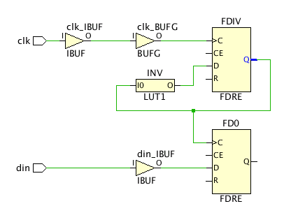

Understanding Generated Clocks
Figure: Example of a generated clock:

The FDIV register drives the FD0/C clock pin, so the wizard recommends defining a generated
clock on the output of FDIV to properly time FD0. The waveform of the generated clock
depends on the function implemented by the combination of the signal connected to the
FDIV/D, FDIV/CE, and FDIV/R pins. In this example, the transformation is a simple division
by 2. For example:
create_generated_clock -name clkdiv -divide_by 2 \
-source [get_pins FDIV/C] [get_pins FDIV/Q]
The master clock can either be a primary clock or another generated clock. The master clock needs to be defined before being used by a generated clock constraint.
Understanding the Generated Clocks Page
- Recommended Constraints: The Timing Constraints wizard recommends the creation of a generated clock on the output of a sequential cell driving the clock pins of other sequential cells.
- Tcl Command Preview: Displays the create_generated_clock commands used to define the generated clocks as listed in Recommended Constraints. These are the constraints that will be added to the design.
- Existing Constraints: Displays currently defined generated clock constraints.
Each of the preceding sections also has a toolbar menu that provides access to one or more of the following commands:
 |
Search | Displays a text entry field to enter a search string. |
 |
Select All | Selects all recommended constraints. |
 |
Edit selected row | Open the Generated Clock Constraints dialog box to define the attributes of the clock. You can also edit these attributes by clicking directly on the field in the Recommended Constraints list. |
 |
Clock Networks | Displays a sub-menu to provide access to the Report Clock
Networks command to generate a new clock network report and the
View Clock Networks command to open an existing report.
Tip: The clock networks are reported in the Clock Networks window.
|
See Also
| UltraFast™ Design Methodology Guide for the Vivado® Design Suite (UG949), Creating Generated Clocks | |
| Vivado Design Suite User Guide: Using Constraints (UG903), Generated Clocks | |
 |
Vivado Design Suite QuickTake Video: Creating Generated Clock Constraints |